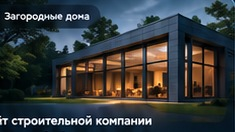
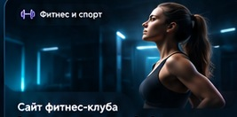
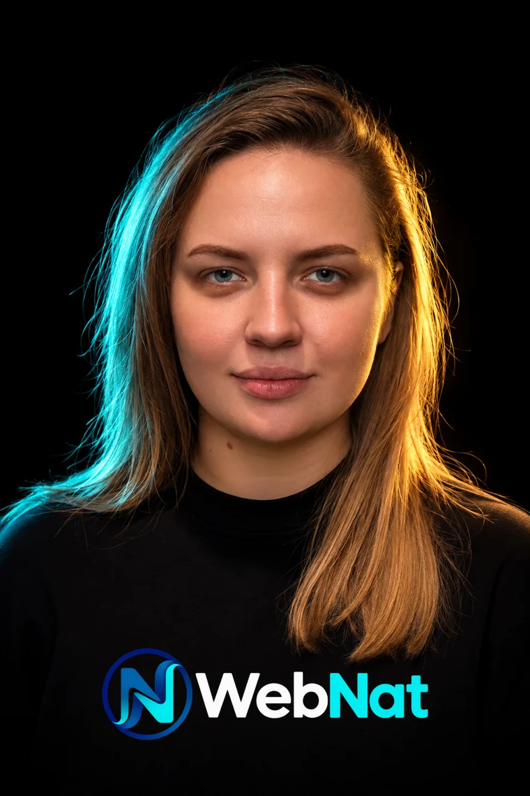

Разработка сайтов под ключ
Создание и улучшение
сайтов для бизнеса
и проектов
Разрабатываю современные, быстрые и удобные сайты, дорабатываю и оптимизирую существующие, беру на себя техническую поддержку и развитие.

Под ключразработка сайтов
Личноведу ваш проект
Быстрееоптимизирую загрузку
На связиподдержка и развитие
Услуги
Чем могу быть полезна
Комплексные решения для вашего сайта: от разработки с нуля до поддержки и развития.
Создание сайтов
Современные сайты для компаний: лендинги, корпоративные страницы, каталоги.
Доработка сайтов
Исправления, новый функционал, интеграции и улучшение существующих проектов.
Редизайн
Обновление структуры и визуала сайта, чтобы он выглядел современно и работал эффективнее.
WordPress
Разработка тем, ACF, настройка, интеграции, оптимизация и поддержка.
1С-Битрикс
Настройка компонентов, исправление ошибок, расширение возможностей CMS.
SEO и контент
Структура страниц, метатеги, оптимизация и содержимое коммерческих сайтов.
Техническая поддержка
Обновления, резервные копии, решение ошибок, обслуживание и развитие сайтов.
Портфолио
Примеры работ и концепций
Визуальные демонстрации направлений разработки. Описание реальных кейсов будет добавлено отдельно.

Демо-концепцияЗагородные дома
Концепция сайта строительной компании
Дизайн · WordPress
Демо-концепцияФитнес и спорт
Лендинг с акцентом на запись и услуги
Редизайн · UI/UXДемо-концепция
Электроника
Визуальная концепция товарного каталога
Каталог · CMSОбо мне
Наталья — разработчик и создатель WebNat
Создаю и развиваю коммерческие сайты, которые помогают бизнесу быть заметнее и удобнее для клиентов. Беру на себя весь путь: от структуры и дизайна до доработок и технической поддержки.
Наведите или нажмите на технологию, чтобы узнать подробнее.

WebNatРазработка • дизайн • поддержка
Как работаю
От идеи до результата
Прозрачный процесс: вы знаете, на каком этапе проект и что будет дальше.
Обсуждение
Выясняю задачи, цели и требования.
План и дизайн
Формирую структуру и визуальную концепцию.
Разработка
Создаю сайт, настраиваю функции и интеграции.
Тестирование
Проверяю адаптивность, скорость и стабильность.
Запуск
Публикую и сопровождаю проект.
Тарифы
Решения под ваши задачи
Примерные стартовые цены. Итоговая смета зависит от объёма, контента и функционала.
Старт
Компактный сайт для быстрого запуска
от 30 000 ₽
- Лендинг или сайт-визитка
- Адаптивный дизайн
- Базовая SEO-подготовка
Бизнес
Сайт с индивидуальными решениями
от 60 000 ₽
- Индивидуальный дизайн
- Функционал и интеграции
- Оптимизация скорости и SEO
Поддержка
Стабильная работа и развитие сайта
от 5 000 ₽/мес.
- Техническое сопровождение
- Исправления и обновления
- Развитие функционала
Связаться со мной
Давайте обсудим ваш проект
Расскажите о задаче — я предложу подходящее решение, сроки и бюджет.
Демонстрационная версия. Подключение формы отправки, реальных контактов и CMS выполнится на этапе WordPress.